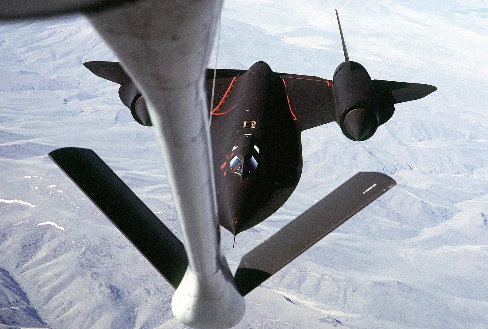
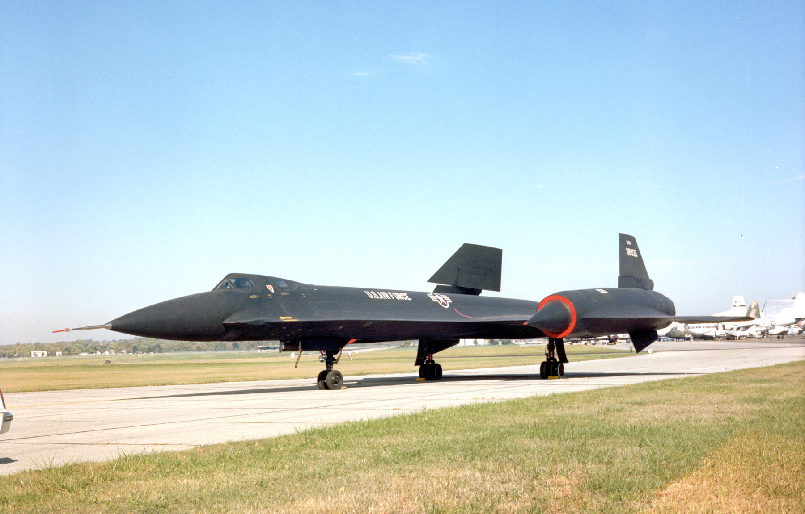
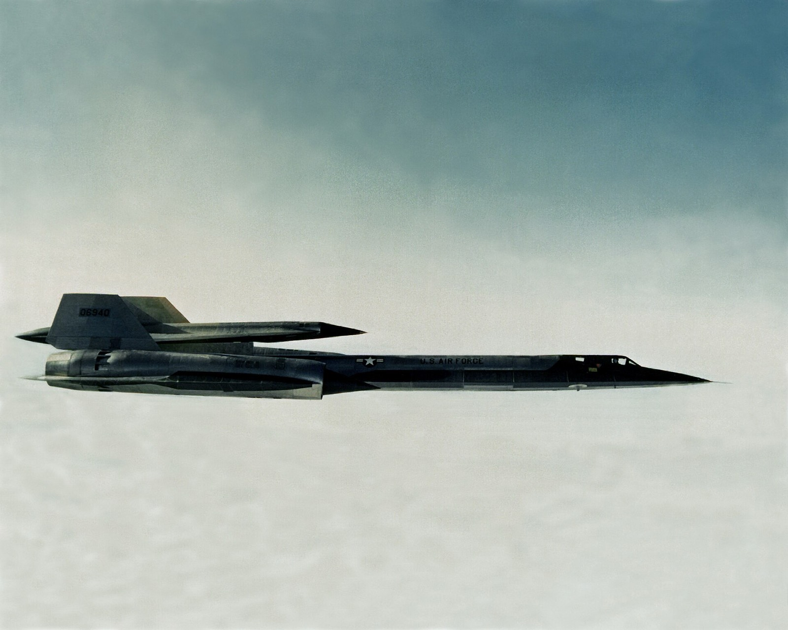
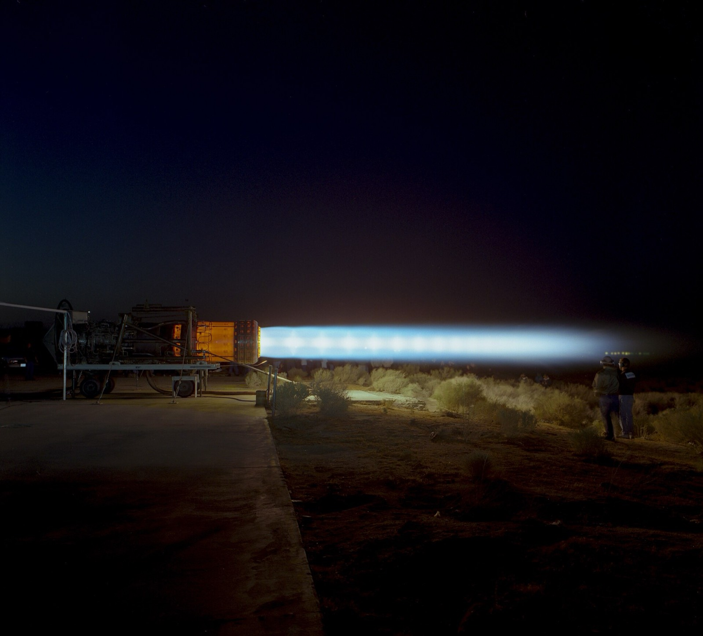

A-12 · CIA
A free archive of the Lockheed A-12, YF-12, M-21 and SR-71. Every photograph, date and number on this site links to the place it came from.
Article 121 was the CIA's name for the first A-12 airframe, serial 60-6924. Scroll to climb: the readout on the left follows a typical SR-71 sortie from the runway to cruise.
The CIA wanted a successor to the U-2 that could fly too high and too fast to be shot down. Lockheed's answer went through a dozen design studies called Archangel. The twelfth, the A-12, won the contract in 1959.
The first airframe, known inside the program as Article 121, left Burbank by road on the night of 26 February 1962 in a crate 35 feet wide and 105 feet long. On 25 April Lou Schalk made an unannounced first hop of under two miles at about 20 feet. The official first flight followed on 30 April.
Bob Gilliland flew the first SR-71A, 61-7950, from Palmdale on 22 December 1964. It was longer and heavier than the A-12 and carried a second crew member, the reconnaissance systems officer.
Sorties usually began with a climb to meet a KC-135Q tanker carrying the SR-71's own JP-7 fuel. Fully fuelled, about 80,000 lb of its 140,000 lb gross weight was fuel.

The same basic design flew in four forms. The registry on the full site will give every airframe its own page: serial, article number, first flight, fate and where to see it today.


On 28 July 1976 SR-71 crews set world records for speed over a straight course and for altitude in sustained horizontal flight. The speed record still stands.

The Air Force retired the SR-71 in January 1990. Congress paid for a brief return in 1995, and the last Air Force flight came in October 1997. NASA flew the last Blackbird flight of all on 9 October 1999.
Lockheed built 32 SR-71s: 29 SR-71As, two SR-71B trainers and one SR-71C. Twelve were lost in accidents and none to enemy action. The full site will map every survivor.

Article 121 will never show ads and will never charge for access. We did not take these photographs or write these records. We collect them, credit the people and archives who did, and link back to the original.